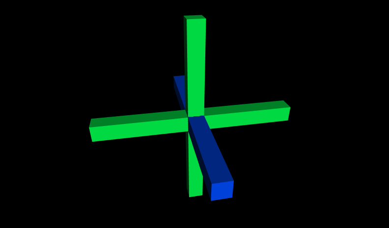
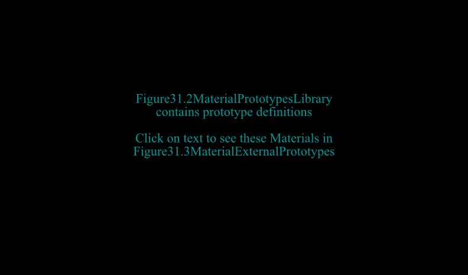
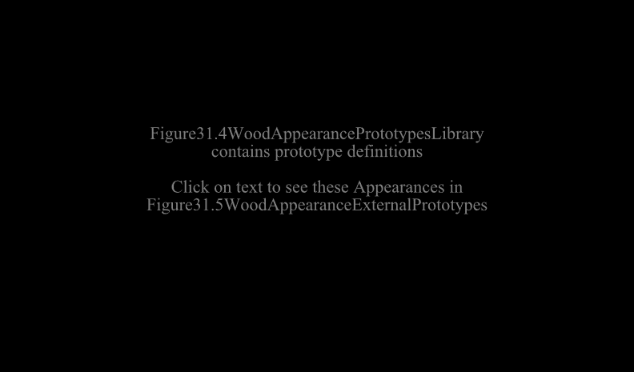
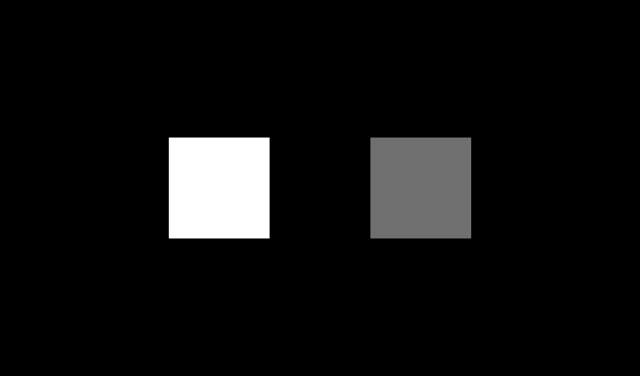
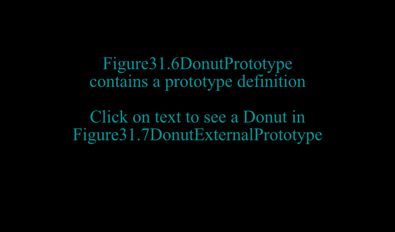
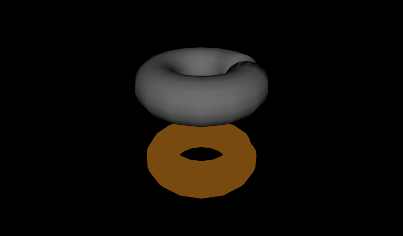
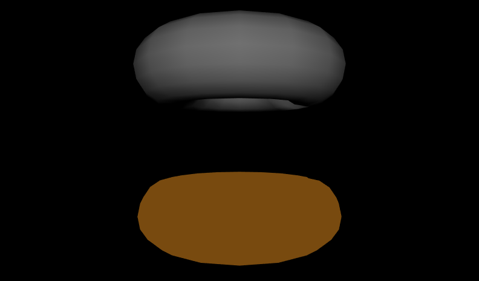
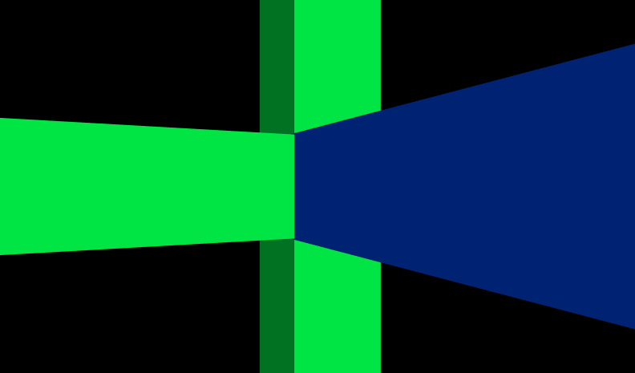

|
By declaring prototype designs and then creating one or more instances, you can create new node types that encapsulate
Shapes, Sensors, Interpolators, Scripts and anything else.
This technique creates new high-level nodes such as robots, menus, new shapes, etc.
A PROTO statement declares a new node type (a prototype) with
a name (the new node type name) along with fields and events (the interfaces to the prototype).
Once defined, a prototyped node can be used like any other node.
These X3D scenes are adapted directly from the
original VRML 2.0 Sourcebook chapter examples.
Also available:
Introduction to VRML97 SIGGRAPH98 course notes.
|

|
![[1] Figure31.1WallColorPrototype.x3d - (default X3D view from 0 0 10)](_viewpoints/Figure31.1WallColorPrototype.x3d._VP_Default_viewpoint.png){kind=link}
![[2] Figure31.2MaterialPrototypesLibrary.x3d - (default X3D view)](_viewpoints/Figure31.2MaterialPrototypesLibrary.x3d._VP_Default_viewpoint.png){kind=link}
![[3] Figure31.3MaterialExternalPrototypes.x3d - (default X3D view)](_viewpoints/Figure31.3MaterialExternalPrototypes.x3d._VP_Default_viewpoint.png){kind=link}
![[4] Figure31.4WoodAppearancePrototypesLibrary.x3d - (default X3D view)](_viewpoints/Figure31.4WoodAppearancePrototypesLibrary.x3d._VP_Default_viewpoint.png){kind=link}
![[5] Figure31.5WoodAppearanceExternalPrototypes.x3d - (default X3D view)](_viewpoints/Figure31.5WoodAppearanceExternalPrototypes.x3d._VP_Default_viewpoint.png){kind=link}
![[6] Figure31.6DonutPrototype.x3d - (default X3D view from 0 0 10)](_viewpoints/Figure31.6DonutPrototype.x3d._VP_Default_viewpoint.png){kind=link}
![[7] Figure31.7DonutExternalPrototype.x3d - Click to pick a size](_viewpoints/Figure31.7DonutExternalPrototype.x3d._VP_Click_to_pick_a_size.png){kind=link}
![[8] Figure31.7DonutExternalPrototype.x3d - (default X3D view from 0 0 10)](_viewpoints/Figure31.7DonutExternalPrototype.x3d._VP_Default_viewpoint.png){kind=link}
![[9] Figure31.9SpinGroupPrototype.x3d - Click on blue crossbar to activate second SpinGroup](_viewpoints/Figure31.9SpinGroupPrototype.x3d._VP_Click_on_blue_crossbar_to_activate_second_SpinGroup.png){kind=link}
![[10] Figure31.9SpinGroupPrototype.x3d - (default X3D view from 0 0 10)](_viewpoints/Figure31.9SpinGroupPrototype.x3d._VP_Default_viewpoint.png){kind=link}